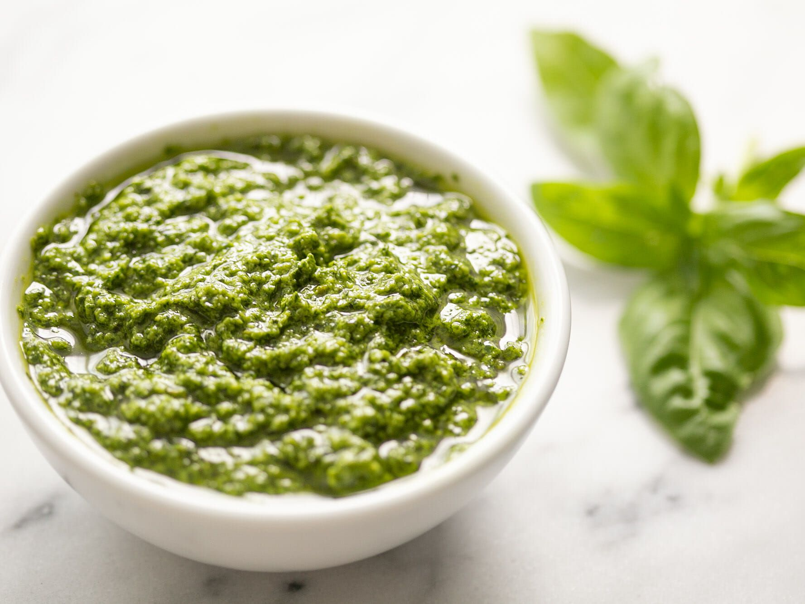

"Pesto Recipe"

Description
A delicious green cream mainly used with pasta, very simple to make, yet so delicious.
A true master combination of few ingredients that will make you want to crave for more
Ingredients
This is for 1 serving
- Salt (One half of tea spoon)
- Extra virgin Olive oil (7 spoons)
- Fresh cheese (I love to combine different types like Pecorino cheese (Fiore Sardo)) 200gr
- Parmigiano Reggiano cheese (Again we can use other ones like Grana Padano) 100gr
- Pecans (the original is pine nuts) like 50gr
- Basil 200gr
- garlic 4 cloves
- Milk 1/5 of a cup (I use cream milk)
Steps to make it
- Separate the basil leaves only
- Clean the leaves of any dirt
- Put the leaves in a pot with boiling water for 15 seconds and then drain all the water out of the leaves with a strainer
- Put in the blender the drained basil leaves, pecans, the two kinds of cheeses, the olive oil, the salt and blend all the ingredients together
- Add the cream milk or milk if you want it more creamy
- Make some pasta
- you can fry the garlic once you cut them in small pieces with some butter and then pour the pesto sauce together with the pasta
- Voila (there you have it...enjoy)